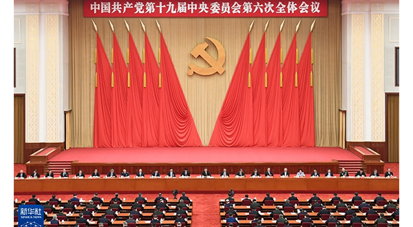
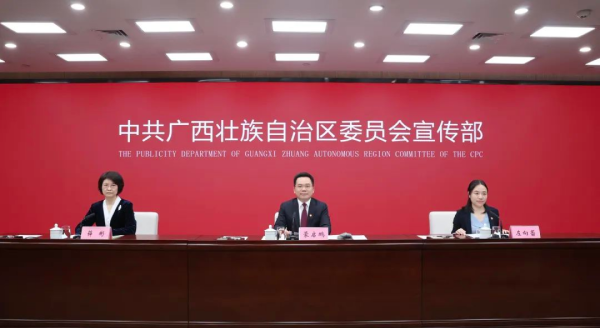
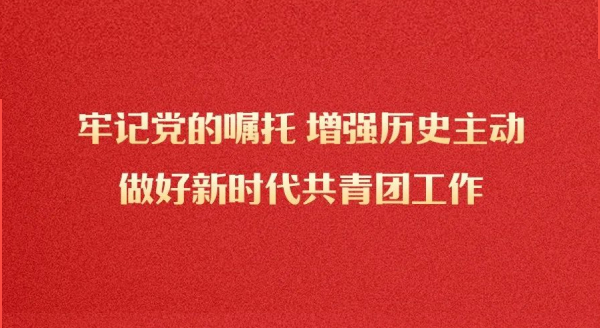
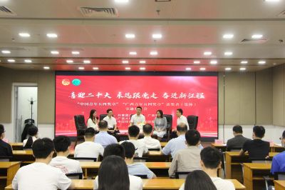

设为首页
加入收藏
ENGLISH
搜索
庆祝中国共产主义青年团成立100周年大会10日上午在北京人民大会堂隆重举行。中共中央总书记、国家主席、中央军委主席习近平在会上发表重要讲话强调，青春孕育无限希望，青年创造美好明天。
首页
百年青春
全团要讯
各省要闻
专题报告
团史资料
<
>

中共中央关于党的百年奋斗重大成就和历史经验的决议

喜迎二十大、永远跟党走、奋进新征程，广西团团这样做！

牢记党的嘱托 增强历史主动 做好新时代共青团工作
热点搜索
中国共青团的百年奋斗征程和历史启示
书写新时代共青团的壮丽青春篇章
团中央书记处理论学习中心组举行专题学习
牢记党的嘱托 增强历史主动 做好新时代共青团工作
把光荣镌刻在历史行进的史册里
塑造了共青团的立身之本、政治之魂、奋进之力、活力之源
让党放心 让青年满意
新闻动态
党史学习
青年先锋
重要讲话
2022-05-05
《习近平与大学生朋友们》系列报道
2022-04-29
[全团要讯 第14期]团山西省委扎实推动直属机关深化改革 聚实焦、出实招、求实效
2022-04-29
[全团要讯 第13期]“喜迎二十大、永远跟党走、奋进新征程”主题教育实践活动专刊之二——坚持“三个结合”推进学习教育走深走实
2022-04-29
[全团要讯 第12期]“喜迎二十大、永远跟党走、奋进新征程”主题教育实践活动专刊之一——全团广泛开展“喜迎二十大、永远跟党走、奋进新征程”主题教育实践活动
2022-04-26
[全团要讯 第11期]各级团组织闻令而动 积极投身疫情防控战
2022-04-21
[全团要讯 第10期]团江苏省委“三个坚持“深化县域共青团基层组织改革试点
2022-03-01
[全团要讯 第9期]加强协作联动 加大信息联通 帮助青少年解决心理困惑、促进健康成长
2022-02-23
[全团要讯 第8期]上海、山东、河南、湖北、广东等地多措并举推进全面从严治团落实落深落细
2022-02-11
[全团要讯 第7期]各级团组织深化大学生“返家乡”社会实践引导青年知国情、懂社会、爱家乡、为群众
2022-01-29
[全团要讯 第6期]各级青联深入开展内地与港澳青少年交流 丰富多彩、 亮点纷呈
2022-01-26
[全团要讯 第5期]河北、山东、广东、四川等地推动中长期青年发展规划纵深实施
03-10
百年瞬间 | 上甘岭战役与《我的祖国》
03-09
百年瞬间 | 延安新华广播电台正式开始播音
03-09
百年瞬间 | 龙羊峡水电站成功截流
03-08
百年瞬间 | 我国颁发首批专利证书
03-07
百年瞬间丨大庆至秦皇岛输油管道建成并成功输油
03-06
百年瞬间丨二滩水电站全面建成投产
03-05
百年瞬间丨亚投行正式成立
03-04
百年瞬间｜中共中央批准兴建长江葛洲坝水利枢纽
03-03
百年瞬间｜中国海军首次亚丁湾护航
03-02
百年瞬间｜《纪念白求恩》
03-01
百年瞬间｜全国政协二届一次会议举行
02-28
百年瞬间｜澳门回归祖国
02-27
百年瞬间｜兰新铁路全线贯通
02-26
百年瞬间｜庆祝改革开放40周年大会在京隆重举行
2022-04-17
坚守在防疫一线的志愿者——季晨
2022-04-17
杭州九堡有个85后“白发书记”
2022-04-17
95后“蛙人”潜游江海 勇护大桥
2022-04-17
“建”证冬奥 “海陀塔”背后的故事
2022-04-17
“我水性最好，我先上！”
2020-07-16
孙鲁英：做有温度、有医术、有爱心的院长
2020-07-03
战“疫”护士吴欣娟：两次挺身而出
2020-05-13
陈雪峰：只想尽我所能为老乡脱贫做点事
2020-04-27
张宗勤：服务果农 让葡萄有小时候的味道
2019-11-02
邓大庆：从贫困典型到脱贫致富“领头雁”
2019-10-10
屠呦呦：蒿草青青 呦呦晚鸣
共青团中央办公厅情况通报[2021]8号
贺军科、杨伟民同志在中长期青年发展规划第二届专家委员会第一次全体会议上的讲话
共青团中央办公厅情况通报[2021]6号
贺军科同志在学习习近平总书记“七一”重要讲话精神专题读书班上的报告和讲话
共青团中央办公厅情况通报[2021]6号
汪鸿雁同志在社区青春行动工作部署会上的讲话
共青团中央办公厅情况通报[2021]5号
贺军科同志在共青团中央、全国青联、全国学联学习习近平总书记视察清华大学重要讲话精神座谈会上的讲话
共青团中央办公厅情况通报[2021]4号
贺军科同志在共青团第三次对口支援西藏、新疆工作会议上的讲话
共青团中央办公厅情况通报[2021]3号
贺军科同志在共青团“学党史、强信念、跟党走”学习教育动员会上的讲话
共青团中央办公厅情况通报[2021]1号
贺军科同志在共青团十八届五中全会上的报告和讲话
共青团中央办公厅情况通报[2020]5号
贺军科、郑富芝同志在全国学联第二十七次代表大会第三次全体会议暨闭幕会上的讲话和汪鸿雁同志在全国青联十三届一次常委会上的讲话
共青团中央办公厅情况通报[2020]4号
贺军科同志在共青团干部教育培训和理论研究工作座谈会上的讲话
共青团中央办公厅情况通报[2020]3号
贺军科同志在全国共青团基层组织改革综合试点工作电视电话会议上的讲话
青
年
大
学
习
<
>
重要文件及相关资讯
10-18
中小学少先队改革主要任务清单
10-18
中青联发【2018】1号 少先队组织工作条例（试行）
10-18
中青联发【2017】21号文 少先队基本礼仪规范
10-18
县（市、区、旗）、中小学少先队改革主要任务清单
10-18
中少发【2017】 9 号关于在中小学少先队队室规范悬挂张贴党和国家领导人对少先队员
10-18
中青联发【2017】3号关于印发《少先队改革方案》的通知
10-18
少先队活动课程指导纲要
10-18
中青联发【2012】23号关于印发《少先队总辅导员设置管理办法（试行）的通知
10-18
教基二[2012]3号教育部关于加强中小学少先队活动的通知
10-18
中青联发【2010】33号关于进一步加强少先队辅导员队伍建设的若干意见
10-18
中青联发【2007】24号关于印发《少先队辅导员管理办法（试行）》的通知
信息交流
2021-09-22
【第38期】来宾共青团：学史增信赓续精神血脉，矢志奋斗谱写青春华章
2021-09-13
【第37期】广西共青团凝聚青年力量，高质量高标准 在青少年中开展好党史学习教育
2021-09-13
【第36期】上好开学第一课 厚植爱党爱国情
2021-09-10
【第35期】暑期三下乡凝聚“青”能量， “五门好课”书写青年担当
2021-08-31
【第34期】共青团广西区委举办学习习近平总书记 “七一”重要讲话精神暨“学党史、 强
2021-08-13
【第33期】共青团广西区委举办广西青少年新媒体能力素质拓展专题培训班
2021-07-26
【第32期】港澳青年学生热议习近平总书记在庆祝中国共产党成立100周年大会上的重要讲
2021-07-16
【第31期】广西新兴领域青年热议习近平总书记在庆祝中国共产党成立100周年大会上的重
2021-07-16
【第30期】广西西部计划志愿者热议习近平总书记在庆祝中国共产党成立100周年大会上的
2021-07-16
【第29期】八桂青年热议习近平总书记在庆祝中国共产党成立100周年大会上的重要讲话
工作动态

共青团广西区委“喜迎二十大 永远
共青团广西区委书记班子理论学习中
共青团广西区委与孔雀西南飞调研组
共青团广西区委书记班子理论学习中
西部陆海新通道青年联盟成立大会
广西高校学子热议习近平总书记在中
共青团广西区委召开广西共青团清廉
媒体聚焦
人民网评：保障粮食安全，要让种粮
首次评出最高奖、青年奖、合作奖、
租得舒心，住得放心！南宁“数字乡
星火燎原、润物无声——体育文化为
广西生物多样性丰富度居全国第三位
央视快评：坚持和平发展合作共赢
央视快评：报效国家 服务人民


.png)